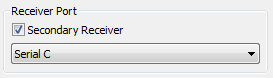

Open topic with navigation
You are here: Firmware Loading > About Firmware Loading
About Firmware Loading
Firmware Loading mode is used to load the firmware onto various devices within a Topcon GNSS receiver.
The GNSS receiver requires firmware to properly operate and provide appropriate functionality.
As Topcon releases firmware updates, loading these updates into the receiver will ensure that the receiver operates at its full potential.
With the TRU application, you can load the firmware to all boards inside the receiver, including:
|
•
|
Peripheral Device (Modem, Bluetooth, etc.)
|
You can load the firmware from your PC with installed TRU application to a GNSS receiver using a serial/USB/Bluetooth/network connection.
Firmware for the modem, Bluetooth, and power boards can be loaded using a serial port connection only.

|
Be extremely attentive when selecting firmware updating parameters, especially when updating firmware for internal modem. Some modem models do not allow terminating of the firmware updating process. So, if you choose incorrect parameter combinations, or interrupt the firmware updating process, it may damage your equipment.
If this happens, and you cannot update firmware using the Power On capture, you will need to have the hardware serviced.
|
To load the firmware to a device, do the following in this dialog:
|
1.
|
Click Device > Application Mode > Firmware Loading. |
|
2.
|
Click Device > Connect, specify corresponding connection parameters (port and its name), and click Connect.
|
|
|
To load the firmware to secondary board of MR-2 /MM-2 receiver, select the Secondary Receiver check box and Serial C in the drop down list of the Connection Parameters dialog:

|